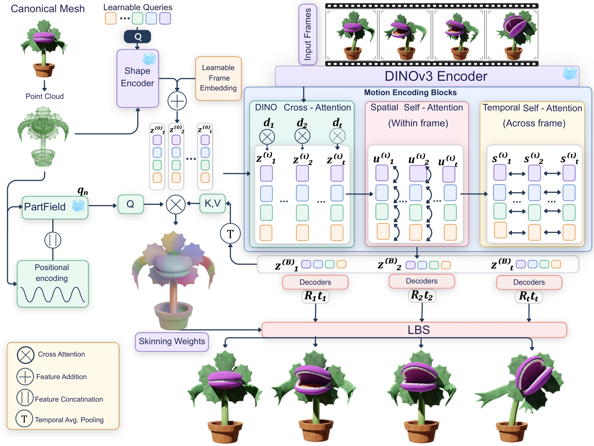
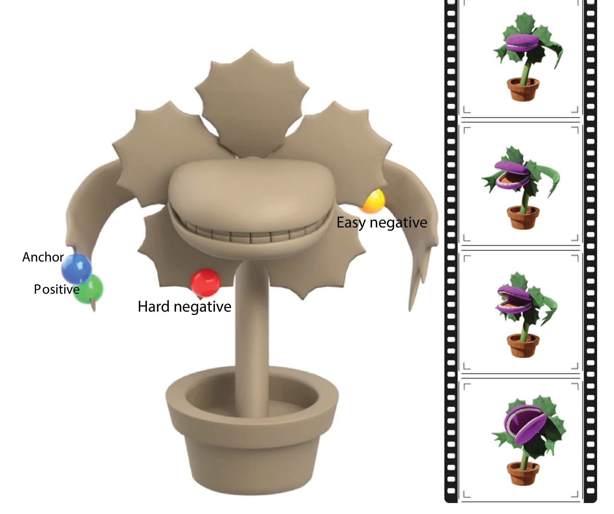
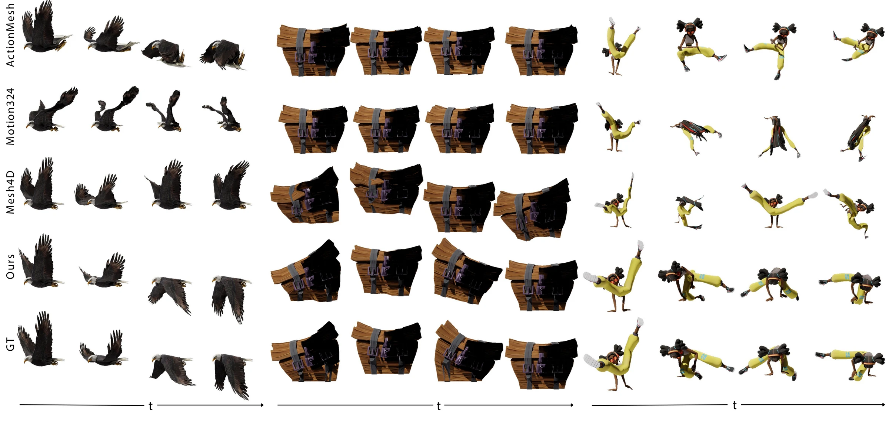
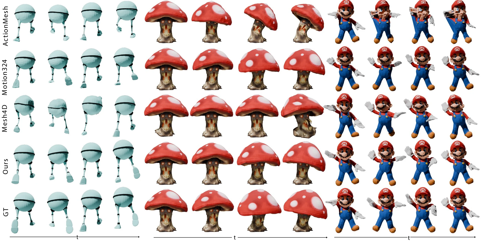

TL;DR
Video-driven mesh animators usually regress every vertex independently, which is high-dimensional. BLARM instead explains the motion with a small set of learned rigid transformations that change over time, blended onto the mesh by skinning weights that stay fixed. No skeletons, cages, or rig annotations are used during training or at test time.
We introduce BLARM, a feed-forward method for video-driven 3D mesh animation. Given a monocular video and a static object mesh, BLARM predicts a temporally coherent animated mesh whose motion follows the video. Rather than relying on explicit rigs or directly regressing high-dimensional vertex motion, we represent animation using a compact set of learned, time-varying rigid motion components and time-invariant vertex-to-component skinning weights. This yields a low-dimensional deformation space without requiring skeletons, cages, skinning weights, or rig annotations. Our architecture conditions geometry-derived deformation latents on video features through factorized spatial-temporal attention, then decodes rigid transformations blended by predicted skinning weights. Trained with trajectory reconstruction, entropy regularization, and motion-aware contrastive learning, BLARM produces accurate and temporally stable animations while recovering compact, interpretable motion structure from monocular video.
How the object moves, separated from where it moves
Many object motions are intrinsically low-dimensional: large groups of vertices move together as rigid or nearly rigid parts. BLARM exploits this structure, but learns the parts from data instead of relying on a predefined rig. For every frame $t$ it predicts $J$ latent motion components, each decoded into a rigid transformation $(R_{t,i},\, t_{t,i}) \in SE(3)$. Each canonical vertex $x_n$ gets one set of weights $w_n$ over the non-root components, fixed across the whole video. The first component is a special root that carries the global motion of the object.
From a mesh and a video to rigid motions and skinning weights
BLARM takes a canonical mesh and a monocular video and predicts two things in a single forward pass: a sequence of time-varying rigid transformations and a set of time-invariant skinning weights.

-
1
Geometry encoding
Surface points and normals are encoded by the frozen TripoSG shape encoder. A fixed set of $J$ learnable queries cross-attends to these dense features, DETR-style, compressing the shape into $J$ deformation tokens. Each token is a candidate motion component.
-
2
Motion encoding with factorized attention
Tokens are broadcast over time and refined by 16 blocks of DINOv3 cross-attention, spatial self-attention within each frame, and temporal self-attention across frames. This costs $O(TJ^2) + O(JT^2)$ instead of $O((TJ)^2)$ for full attention, while preserving both part-to-part coordination and temporal consistency.
-
3
Rigid decoding and skinning
Two small MLP heads decode every token into a 6D rotation (orthogonalized with Gram–Schmidt) and a translation. For the weights, each vertex combines a positional encoding with frozen PartField features and cross-attends to the time-averaged motion tokens; a softmax gives non-negative, normalized weights.
Three losses, no rig supervision
BLARM is trained only from point trajectories. Three complementary terms shape the motion and the decomposition:
A focal-style weight $\omega_{t,n}$ emphasizes points with large error, so articulated regions are not drowned out by static ones.
Encourages each vertex to depend on only a few components, like a vertex bound to a few bones in a traditional rig.
An InfoNCE loss on the Bhattacharyya similarity of skinning weights pulls together vertices that move alike and pushes apart those that do not.

Mining pairs from motion
Each point trajectory is summarized by a per-frame descriptor of rotation-axis direction, translation direction, and a static flag. Motion similarity, averaged over time, picks candidate pairs, and canonical-space distance decides how they are sampled:
- Anchor a vertex on the moving leaf
- Positive nearby, moves the same way
- Hard negative nearby, moves differently
- Easy negative far away, moves differently
Hard negatives sharpen boundaries between neighbouring parts; easy negatives keep unrelated motions apart globally.
Ground truth next to BLARM
Held-out sequences from ActionBench (16 frames) and Motion80 (variable length, up to 72 frames shown). Each clip shows the ground-truth animation on the left (this is also the video BLARM sees) and BLARM's animated mesh on the right, rendered from the same camera with the original texture. Click a clip to enlarge it.
Against feed-forward mesh animators
We compare with ActionMesh, Motion3-to-4, and Mesh4D, which, like BLARM, take a video and a canonical mesh and output an animated mesh without a predefined rig. All methods receive the same ground-truth first-frame mesh.


Part structure, discovered without supervision
Coloring each vertex by its skinning weights shows what BLARM has learned. Without any rig or part labels, the components line up with regions that move coherently in the video. Below, each example shows the input video next to the animated mesh colored by its predicted weights, with the location of every component marked.
Skinning weights are predicted per 16-frame window, so in longer Motion80 sequences the colors can shift where one window hands over to the next.
The decomposition follows the motion
The skinning weights are predicted from the video, not fixed per mesh. Driving the same character with two different performances gives two different decompositions: in each case, the components group the vertices that move together in that video.
Geometry metrics follow the ActionMesh protocol: CD-3D, CD-4D, and the correspondence-based motion error CD-Motion. Appearance metrics compare rendered views of the predicted animation against the ground-truth renders.
| Method | Geometry | Appearance | |||||
|---|---|---|---|---|---|---|---|
| CD-3D↓ | CD-4D↓ | CD-Motion↓ | LPIPS↓ | CLIP↑ | FVD↓ | DreamSim↓ | |
| Mesh4D | 2.57 | 5.01 | 9.24 | 0.06 | 0.95 | 787.38 | 0.08 |
| Motion3-to-4 | 2.49 | 5.34 | 10.31 | 0.07 | 0.92 | 1270.80 | 0.12 |
| ActionMesh | 3.30 | 5.61 | 11.12 | 0.08 | 0.93 | 1126.90 | 0.11 |
| BLARM (ours) | 1.71 | 3.07 | 7.15 | 0.05 | 0.96 | 426.72 | 0.05 |
| Method | Geometry | Appearance | |||||
|---|---|---|---|---|---|---|---|
| CD-3D↓ | CD-4D↓ | CD-Motion↓ | LPIPS↓ | CLIP↑ | FVD↓ | DreamSim↓ | |
| Mesh4D | 5.40 | 11.13 | 24.26 | 0.11 | 0.93 | 1517.45 | 0.11 |
| Motion3-to-4 | 2.25 | 5.89 | 13.00 | 0.07 | 0.95 | 735.57 | 0.06 |
| ActionMesh | 2.44 | 5.48 | 12.78 | 0.08 | 0.94 | 791.80 | 0.08 |
| BLARM (ours) | 1.93 | 3.46 | 8.72 | 0.06 | 0.97 | 482.50 | 0.05 |
Every piece prevents a collapse
Without the contrastive term, the model collapses onto very few non-root components and accuracy drops sharply. PartField features, entropy regularization, and the contrastive loss are complementary, and the latent rigid formulation beats directly predicting per-vertex offsets, especially on CD-Motion.
| Model | CD-3D↓ | CD-4D↓ | CD-M↓ | Lat./Vtx. | Lat./Shape |
|---|---|---|---|---|---|
| w/o PartField, ent., con. | 2.95 | 5.78 | 13.53 | 1.00 | 1.00 |
| w/o contrastive | 2.95 | 5.88 | 12.90 | 1.00 | 1.00 |
| Per-vertex direct prediction | 2.47 | 4.33 | 10.96 | — | — |
| w/o PartField | 2.37 | 4.07 | 10.51 | 1.85 | 22.20 |
| w/o entropy | 2.22 | 4.05 | 9.71 | 1.97 | 27.98 |
| Control | 2.22 | 4.04 | 9.48 | 1.59 | 25.52 |
| Final model | 1.71 | 3.07 | 7.15 | 1.71 | 29.50 |
| Model | CD-3D↓ | CD-4D↓ | CD-M↓ | Lat./Vtx. | Lat./Shape |
|---|---|---|---|---|---|
| $J = 15$ | 2.53 | 4.49 | 11.42 | 2.63 | 14.64 |
| $J = 31$ | 2.22 | 4.04 | 9.48 | 1.59 | 25.52 |
| $J = 63$ | 2.38 | 4.20 | 9.44 | 1.22 | 42.01 |
| $J = 127$ | 2.44 | 5.11 | 11.88 | 1.24 | 96.27 |
When neighboring parts look alike
- Entangled assignments. When nearby regions look similar but should move independently, such as a hand resting against the torso, vertices can be assigned to the wrong component and adjacent parts move together.
- Topology must support the motion. BLARM animates the given canonical mesh; if its connectivity cannot reasonably support the target motion, the predicted deformation may show artifacts.
BibTeX
@inproceedings{goyal2026blarm,
title={BLARM: Animating 3D Objects from Video via Blending Latent Rigid Motion Primitives},
author={Goyal, Pradyumn and Ben-Shabat, Yizhak and Liu, Hsueh-Ti Derek and Jiang, Haomiao and Mukherjee, Snehasish and Spence, Kyle and Stauber, Mark and Kalogerakis, Evangelos and Zeng, Yunze},
booktitle={Advances in Neural Information Processing Systems (NeurIPS)},
year={2026}
}